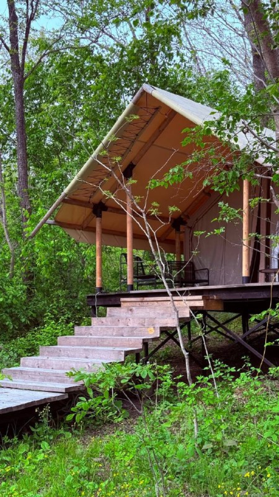
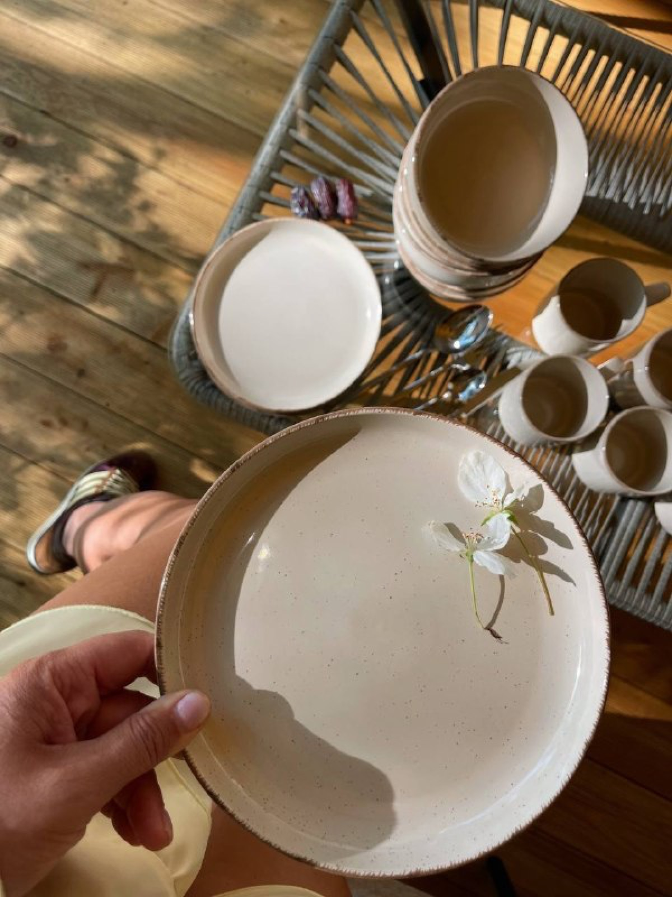

01 · Большой шатёр
Дом на шестерых
Для компании друзей или двух семей. Вечером опускаете экран, включаете проектор — и у вас кино посреди леса.
от … ₽ за сутки

Ты, лес, море и свобода. Поселитесь в шатре среди деревьев, готовьте на огне, а утром идите к воде.
Домов всего два, поэтому здесь тихо: ни очереди к мангалу, ни чужой музыки. Вечером слышно костёр, утром — птиц.
Оба дома стоят на деревянных помостах прямо между деревьями. Внутри — кровати, свет и интернет, снаружи — лес.
Для компании друзей или двух семей. Вечером опускаете экран, включаете проектор — и у вас кино посреди леса.
Для семьи или пары, которой хочется тишины. Откидываете полог — и перед вами только деревья.
Место, где собираются вместе: диваны, большой стол, игры и ещё один экран для кино.
Можно ничего не планировать: всё в нескольких шагах от дома.
Кострище в лесу и места вокруг огня. Здесь заканчивается каждый вечер.
Мангал, решётки и посуда уже на месте. Привезите только продукты.
Берёте доску и идёте к воде — до берега сто метров.
Выйти в бухту на вёслах и посмотреть на лес с воды.
Проектор, экран и колонка. Фильм выбираете сами.
Гамак между деревьями, батут для детей, кальян и караоке для взрослых.

Вместо стен — брезент, вместо двора — лес. При этом спите вы на нормальной кровати, душ и туалет рядом, а посуда и мангал уже ждут.
Что взять с собой ↗Оба дома и общий шатёр можно снять целиком: никого, кроме ваших гостей.
Четыре снимка взяты из вашего канала, на месте остальных будут ваши.
21 оценка, все пятёрки. Сюда поставим три настоящих отзыва из 2ГИС — с именами гостей.
Здесь будет отзыв гостя из 2ГИС.
Имя гостяЗдесь будет отзыв гостя из 2ГИС.
Имя гостяЗдесь будет отзыв гостя из 2ГИС.
Имя гостяОтвечаем заранее, чтобы вам не пришлось спрашивать.
Еду и напитки. Посуда, мангал, столы и стулья уже на месте.
Да. Душ и туалет — рядом с общим шатром, интернет есть в обоих домах.
Да. Для детей есть батут, а до моря — сто метров пешком.
Доедет любая. Точку и маршрут подскажем по телефону.
Здесь будут ваши цены за сутки: дом на шестерых, дом на четверых и вся территория целиком.
Здесь будут ваши правила: время заезда и выезда, залог, тишина.
Позвоните — расскажем про свободные дни и ответим на вопросы. Свежие фото и новости — в канале.
ПозвонитьКанал в Telegram